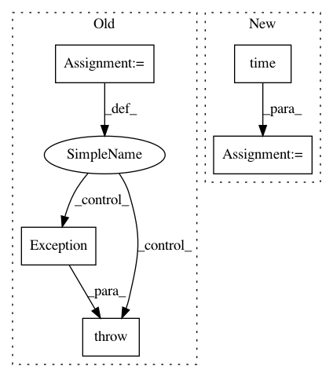

53dd9e441fbbb0bab2ab5f9d18f35293d9a8bbda,distributed/tests/test_worker.py,,test_statistical_profiling_cycle,#Any#Any#Any#Any#,1044
Before Change
x = a.get_profile(start=time() + 10, stop=time() + 20)
assert not x["count"]
for i in range(5): // there is a chance that this will be slightly off. Try a few times
x = a.get_profile(start=0, stop=time())
if x["count"] == sum(p["count"] for _, p in a.profile_history) + a.profile_recent["count"]:
break
else:
raise Exception(x["count"], sum(p["count"] for _, p in a.profile_history) + a.profile_recent["count"])
y = a.get_profile(start=end - 0.300, stop=time())
assert 0 < y["count"] <= x["count"]
After Change
x = a.get_profile(start=0, stop=time())
actual = sum(p["count"] for _, p in a.profile_history) + a.profile_recent["count"]
x2 = a.get_profile(start=0, stop=time())
assert x["count"] <= actual <= x2["count"]
y = a.get_profile(start=end - 0.300, stop=time())
assert 0 < y["count"] <= x["count"]
In pattern: SUPERPATTERN
Frequency: 3
Non-data size: 5
Instances
Project Name: dask/distributed
Commit Name: 53dd9e441fbbb0bab2ab5f9d18f35293d9a8bbda
Time: 2019-02-17
Author: mrocklin@gmail.com
File Name: distributed/tests/test_worker.py
Class Name:
Method Name: test_statistical_profiling_cycle
Project Name: ray-project/ray
Commit Name: e5b6566d28bd0215588f5b47d2cf80867d07b65d
Time: 2020-05-29
Author: krfricke@users.noreply.github.com
File Name: python/ray/serve/utils.py
Class Name:
Method Name: block_until_http_ready
Project Name: GoogleCloudPlatform/PerfKitBenchmarker
Commit Name: 6b753328c8b30e02a7054a51f6573c1dd9a2eea5
Time: 2016-06-27
Author: hildrum@google.com
File Name: perfkitbenchmarker/resource.py
Class Name: BaseResource
Method Name: Create